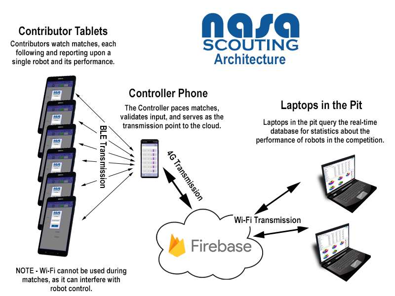

About the NASA Scouting App
NASA, a.k.a Not Another Scouting App, is a project created by Jake Rothfus, Luke Kaufman, Anna Bai, Matthew Hull, and Eric Rothfus for the FRC team 2468. The idea behind NASA was to make an infrastructure that allows for the quick and easy creation of a customized scouting app. To accomplish this we designed NASA to be able to generate a scouting app using an XML file, a industry standard file type that can be easily learned. This allows even someone with minimal coding experience to completely design and reshape the app into what they need it to be.
The architecture of NASA can be broken into three main components: Contributors, Controllers, and the Database. Starting with data collection we have the Contributors, in our case six Lenovo Android tablets that scout each match and record data upon a single robot and its performance. The data is then sent through bluetooth low energy to the Controller who validates inputs and serves as the transmission point to our Firebase database. Firebase then works to provide real-time statistics about the performance of robots at the competition that can be queried by any device with wifi access or 4G connectivity.
The Contributor's interface is a downloadable HTML page that can be run in offline mode. This downloadable page can be recreated for each years new game through the main XML file. The Controller interface was designed to be non-specific and can remain unchanged from year to year despite the changed game. Finally the database allows for the creation of changeable views that allow for multiple interpretations of the collected data and real time statistics. Because of our team's heavy emphasis on our in a box methodology we decided to document the creation and use of this framework during the 2019 FRC Season. On our Website we have a number of tutorial videos that go in depth on the use of the NASA framework and its customizability. By having both Seniors and Juniors on our development team we've ensured the continuity of the project beyond the 2019 season. Our team believes that Legacy is not what you leave for others, but in others. With this in mind, we worked not to leave behind a good scouting app, but the ability for those that come after us to create a good scouting app.